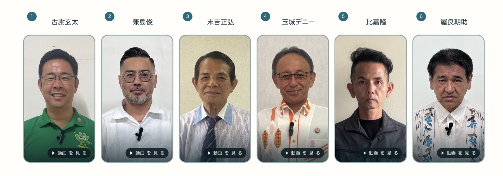

立候補者の回答動画を公開しました！
2026年9月3日の正午に、こどもたちがワークショップで一生懸命に考え抜いた「2つの直球質問」に対し、沖縄県知事選挙の候補者の皆様全員からいただいた本気の回答動画を公開いたしました！

大人の都合を一切挟まない、候補者の「本音」と「お人柄」が伝わる2分間の動画です。ぜひ親子やご家族でご覧ください。
2026年9月3日の正午に、こどもたちがワークショップで一生懸命に考え抜いた「2つの直球質問」に対し、沖縄県知事選挙の候補者の皆様全員からいただいた本気の回答動画を公開いたしました！

大人の都合を一切挟まない、候補者の「本音」と「お人柄」が伝わる2分間の動画です。ぜひ親子やご家族でご覧ください。